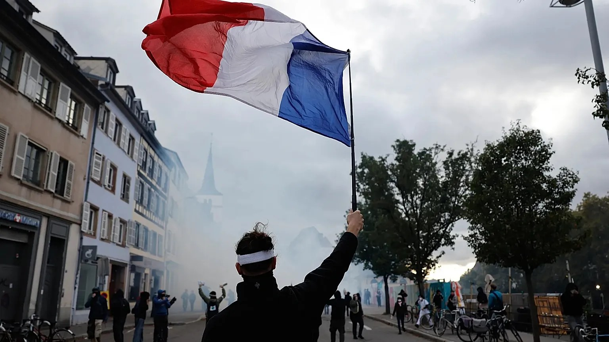

Imagen: AP Photo
Durante septiembre y octubre de 2026, Francia fue escenario de una serie de manifestaciones y movilizaciones masivas. Entre las principales demandas destacaron la mejora de la educación pública, el combate al aumento del costo de vida, una mayor justicia fiscal y la protección del presupuesto destinado a los servicios públicos esenciales, como la salud y la educación.
La movilización comenzó entre estudiantes de secundaria franceses, quienes exigían profesores suficientes, instalaciones escolares dignas, más recursos y mayor acceso a la universidad. Según Public Sénat, desde el inicio de las protestas hasta el 8 de octubre, 6,877 personas habían sido puestas bajo custodia policial, de las cuales 86% eran menores de edad. El 24 de octubre, tras una nueva jornada de protestas, se reportaron cerca de 1,000 detenciones adicionales y distintos episodios de violencia.
Aquí surge una interrogante: ¿cómo se moldea la relación entre una generación y el Estado cuando, desde una edad temprana, sus experiencias de participación política quedan marcadas por la represión y la violencia?
Las protestas cobraron fuerza y las demandas estudiantiles se extendieron hacia temas de movilidad social, libertad política y la manera en que el Estado trata a sus jóvenes. La violencia estructural había generado tensiones durante años, desde el malestar provocado por la pandemia de covid-19 hasta las dificultades para acceder a la educación superior, con procesos de selección cuestionados por su falta de transparencia y posibles prácticas discriminatorias. Estas condiciones contribuyeron a un clima de descontento que acompañó las movilizaciones, algunas de las cuales registraron episodios de violencia directa, como ocurrió en Lille y Niza.
El 26 de octubre, el gobierno francés anunció medidas para mejorar las condiciones escolares, ampliar el acceso a la educación superior y reformar los procesos de admisión universitaria. Sin embargo, las organizaciones estudiantiles consideraron insuficientes estas respuestas y convocaron a nuevas movilizaciones para el 31 de octubre y el 5 de noviembre. Para numerosos adolescentes, las protestas también representaron experiencias de participación política marcadas por detenciones, denuncias de violencia policial y miedo.
El Instituto para la Economía y la Paz identifica la confianza en las instituciones y el buen funcionamiento del gobierno como elementos esenciales para construir una paz positiva. ¿Qué les enseñaron estas experiencias a los adolescentes franceses? ¿Qué tanta confianza pueden generar las instituciones cuando, desde una edad temprana, la participación política queda marcada por la violencia y el miedo?
CIPMEX · Centro de Investigación para la Paz México, A.C. · Paz que se piensa, paz que se construye